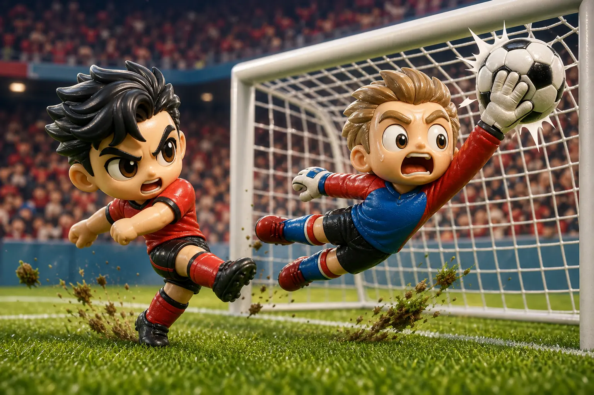
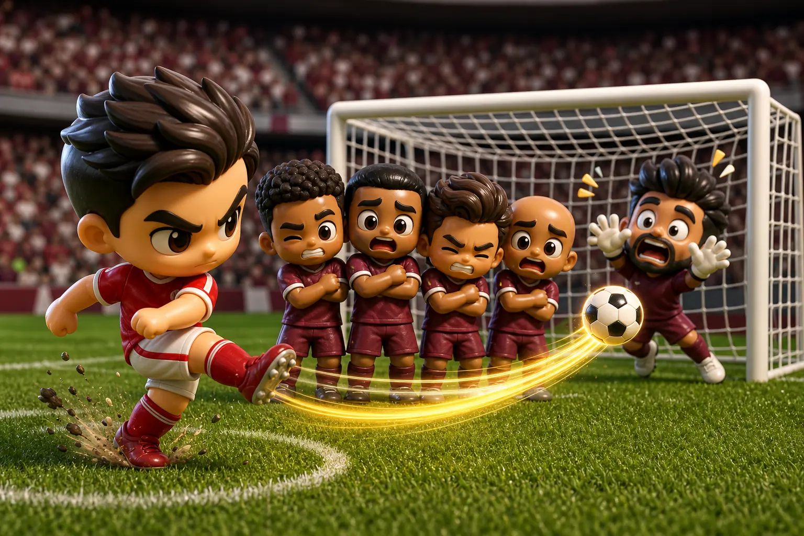

头条
墨西哥开幕战补时绝杀，南非防线最后一刻失守
在满场噪音里，墨西哥用边路压迫撑过下半场的体能断点，终场前靠禁区外二次进攻完成致命一击。 南非一度把比分扳平，但最后五分钟连续退守，让主队把整份开幕日报纸的头条抢走。
墨西哥
2
:
1
南非
模拟赛程专刊 · 漫画报纸版 · 开幕日四场完整赛果
在满场噪音里，墨西哥用边路压迫撑过下半场的体能断点，终场前靠禁区外二次进攻完成致命一击。 南非一度把比分扳平，但最后五分钟连续退守，让主队把整份开幕日报纸的头条抢走。
墨西哥 90+2 分钟远射折射入网，拿下开幕胜。

单掌救险韩国先靠反击得手，捷克下半场用高球轰炸追平。
加拿大开局就拉高节奏，两翼速度把比分快速拉开。

定位球重击瑞士中场压迫稳定收割，两记定位球让比赛提前定调。
第 73 分钟，韩国右路一次斜插几乎撕开捷克防线，门前补射却被守门员单掌托出。 这球没有改写比分，却让比赛从战术棋局突然变成漫画分镜：汗水、铲球、怒吼，以及看台上同时抱头的两边球迷。
桑巴快攻碰上北非硬度，前场节奏可能一开场就拉满。
一边要抢历史镜头，一边要靠高球和对抗把局面敲开。
主场速度遇上南美贴身防守，预测难度直接升级。
金绿冲撞红白，定位球和二点球会是主播重点盯防区。
主播在重播室直接喊破音：边路一开，后卫只能追背号。
主播抱着手套复盘：这一掌把一分硬生生从门线拖回来。
主播看完香蕉球路线图，只能沉默三秒再说：墙真的歪了。